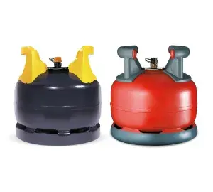
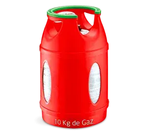
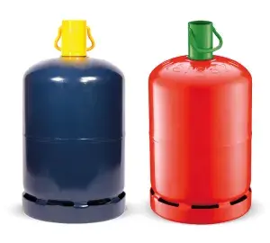

Nos services
votre commerce de proximité, au service de votre quartier
Livraison à domicile
Vous manquez de temps ou vous ne pouvez pas vous déplacer ?
Pas de problème !
Votre épicerie de quartier vous propose un service de livraison à
domicile le mardi, mercredi, jeudi et vendredi en matinée.
Appelez-nous au 04 74 86 40 64 deux
ou trois jours avant la livraison souhaitée.
Nous prenons note de votre liste de courses et vous livrons
directement chez vous à l'heure convenue.
Nous nous déplaçons dans une zone de 5 kilomètres autour de
Roussillon.
Pour toute commande supérieure à 50€, la livraison est
offerte.
Pour toute commande inférieure à 50€, les frais de livraison
correspondront à la différence nécessaire pour atteindre ce
montant.
Le règlement se fait lors de la livraison en chèque ou espèces.
Dépôt de pain
Venez chercher votre baguette fraîche du jour, cuite avec amour
par notre boulangère partenaire Adeline, à Roussillon.
Envie d'un pain spécial ? N'hésitez pas à passer commande ! Votre
Proxi vous offre la possibilté de commander, la veille pour le
lendemain, le pain de votre choix : vivarais, banette graines,
bûcheron, pain complet, viennoiseries ... etc.
A noter la fermeture hebdomadaire de la boulangerie le lundi.
Bouteilles de gaz
Besoin de recharger votre bouteille de gaz ? Nous vous proposons
un service de vente de gaz rapide et pratique de la marque
Antargaz.
Pour toute déconsignation de bouteille, le contrat de consignation
devra ètre présenté. Il servira au remboursement du montant de la
consigne indiquée.
| BUTANE | PRIX (TTC) | CONSIGNE (TTC) | |
|---|---|---|---|
|  | ELFI 5.5Kg /MALICE 5.5Kg | 25.00€ | 51.00€ |
|  | CALIPSO 10Kg | 34.50€ | 51.00€ |
|  | 13 Kg | 43.00€ | 45.00€ |
| PROPANE | PRIX (TTC) | CONSIGNE (TTC) | |

|
13 Kg | 43.00€ | 45.00€ |
Une contribution de 5 euros sera demandée si vous désirez être livré à la maison.